00:00:01 — NAIROBI, KENYA
Fifteen years of
Fifteen years of
light, lens and lived-in stories.
Vincent Oduor is a cinematographer, director and producer working across feature films, TV drama, documentary and commercial ads.Kibera trained, East Africa tested.
View the work →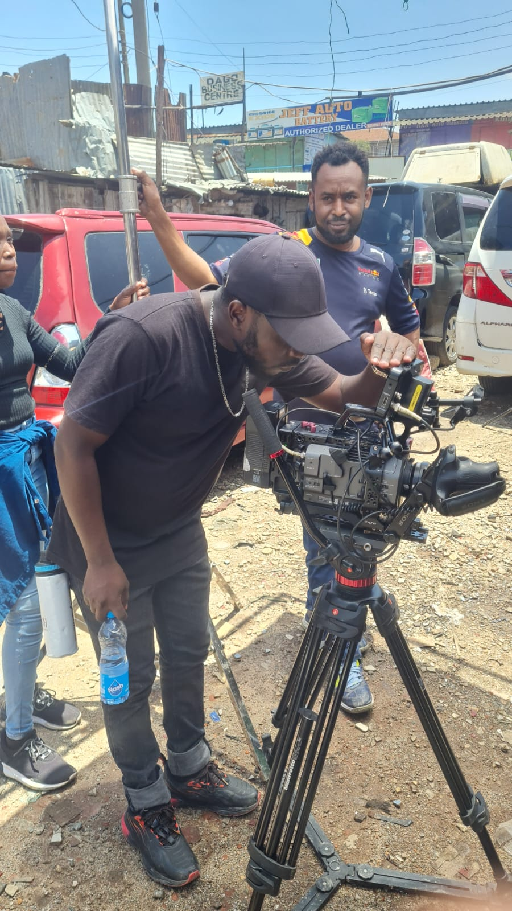
Set stills
Lights, camera, ... unfiltered magic of visual storytelling in production.
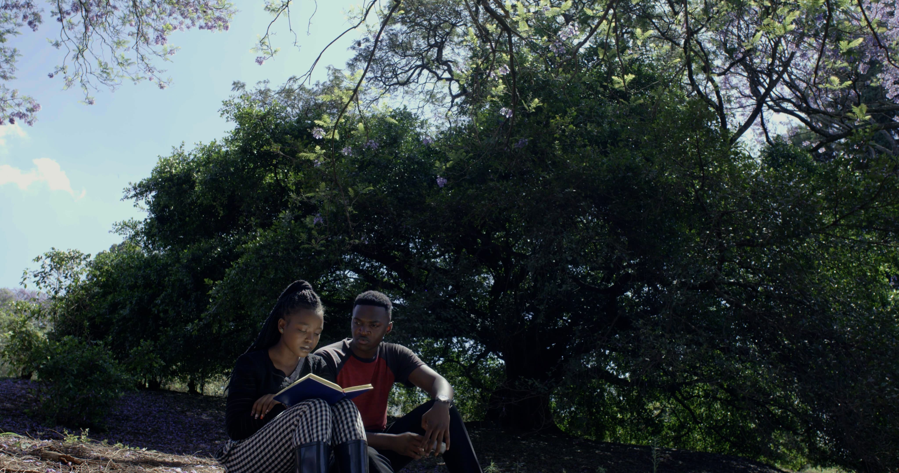
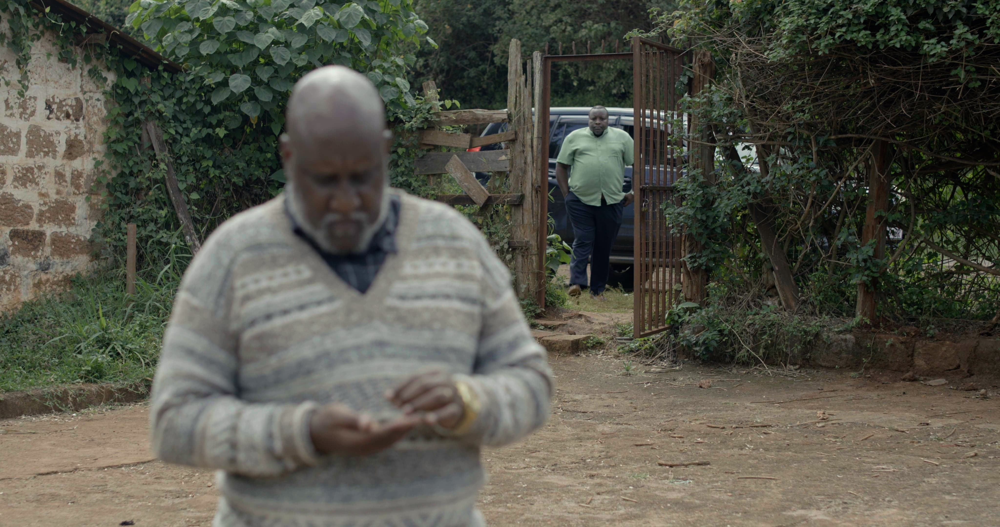
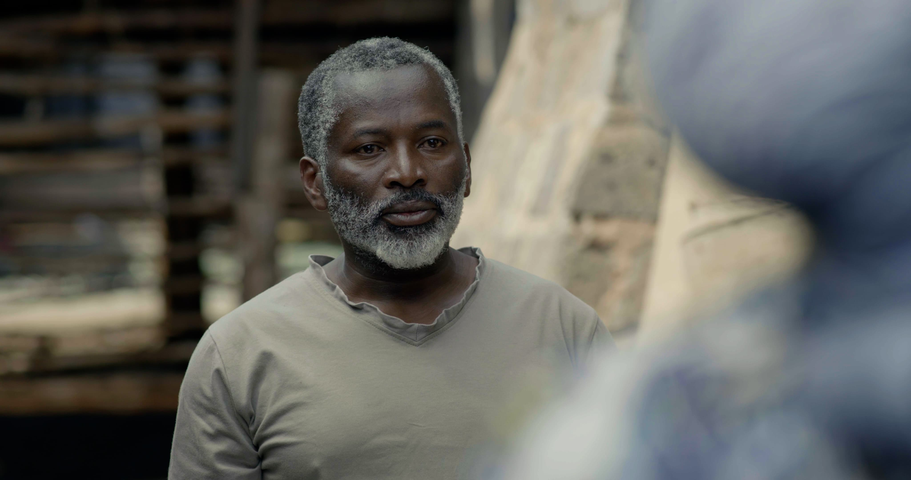
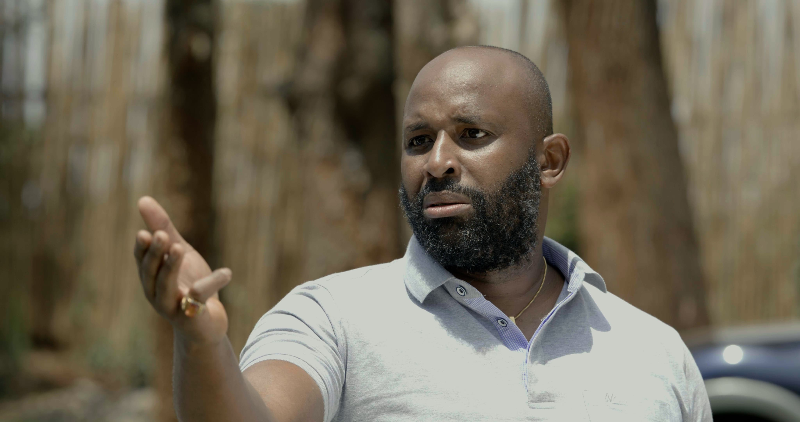
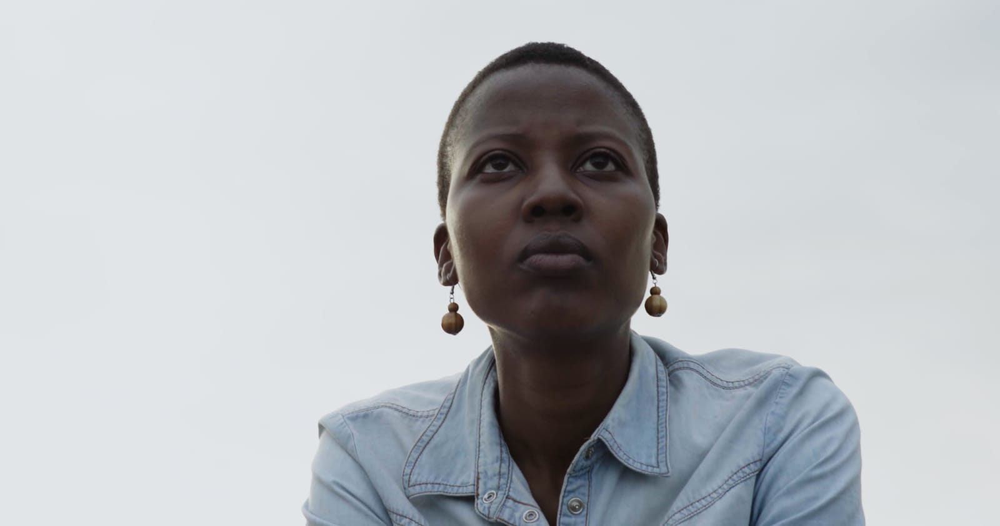
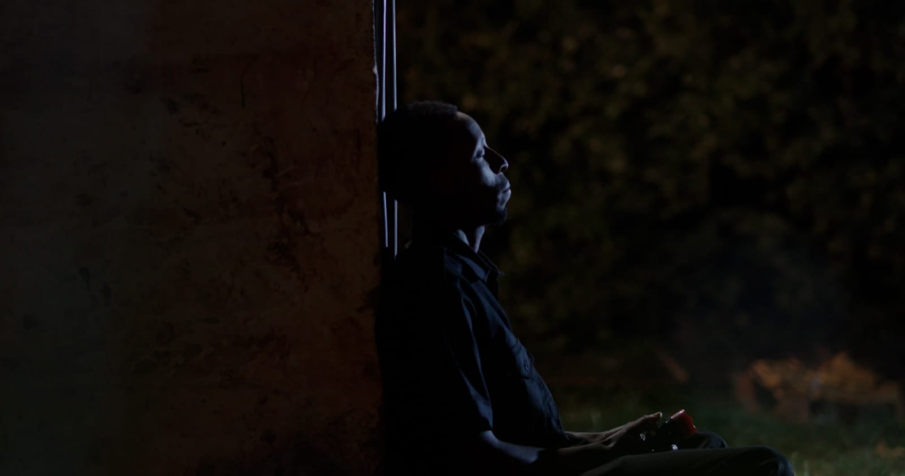
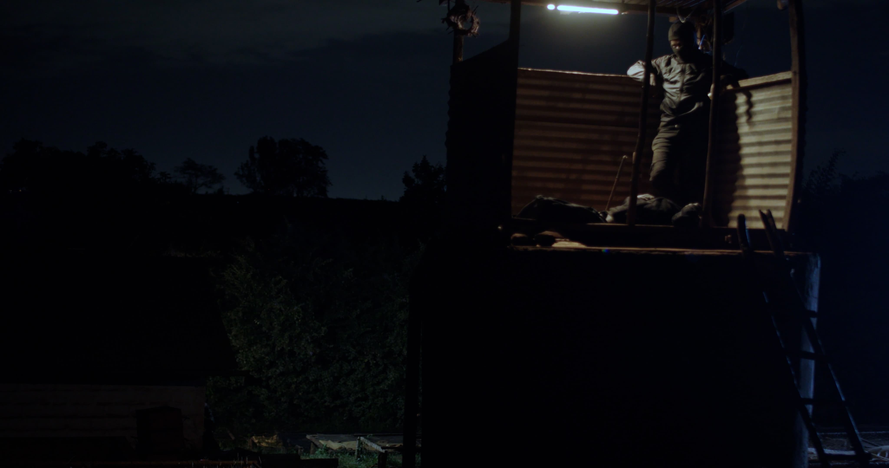
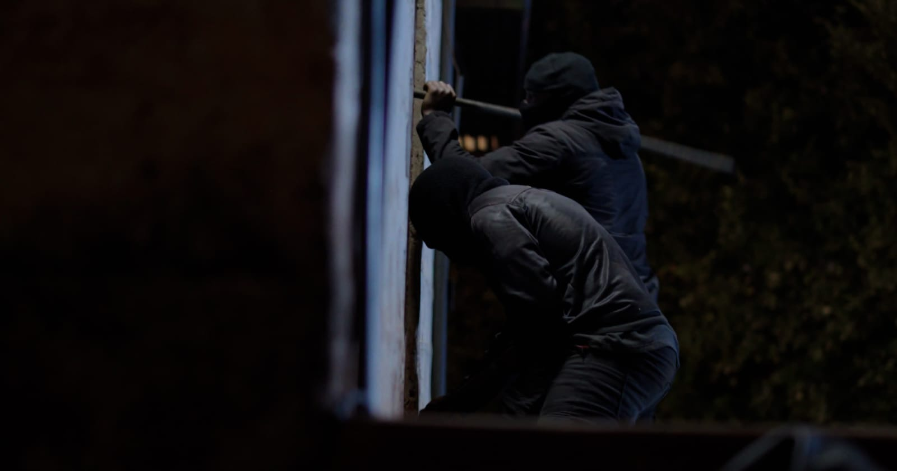
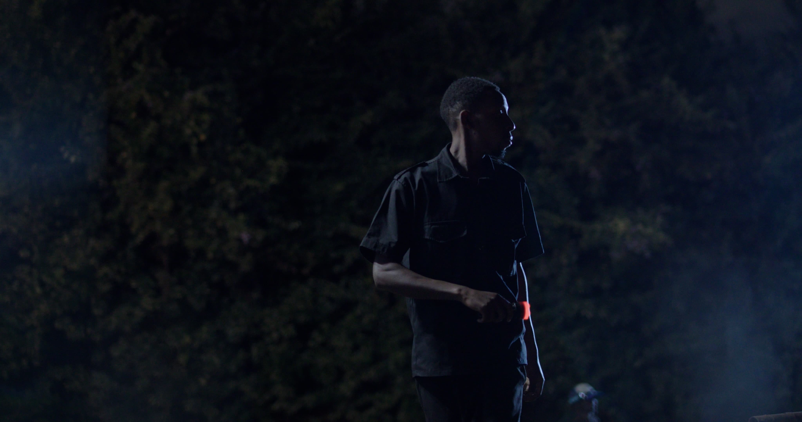
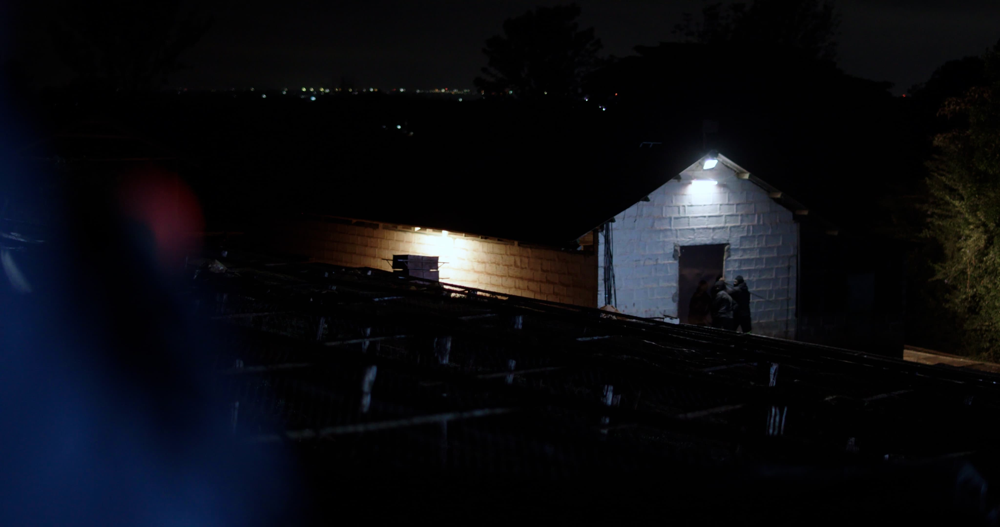
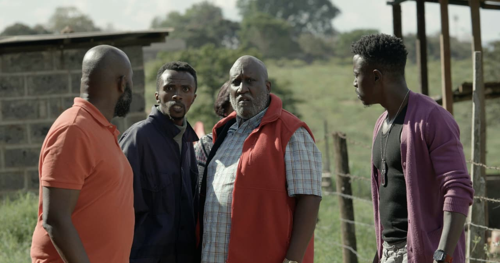
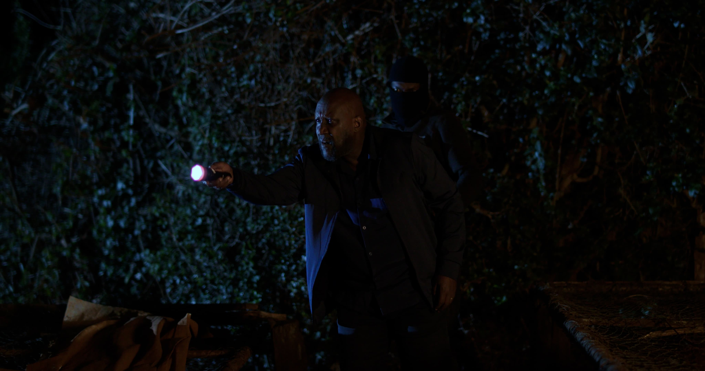
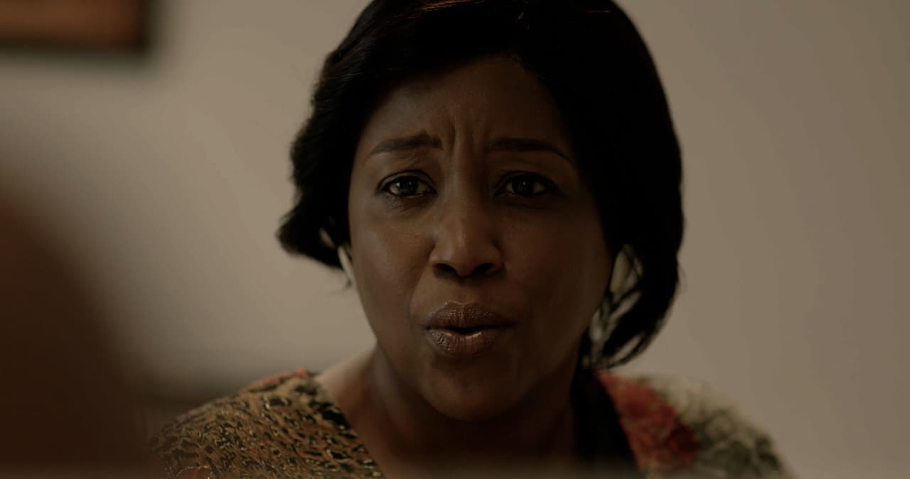
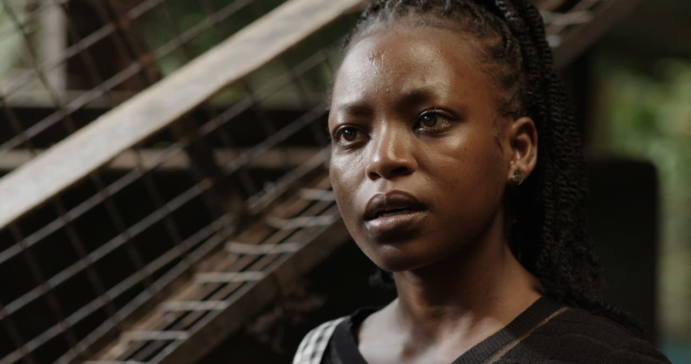
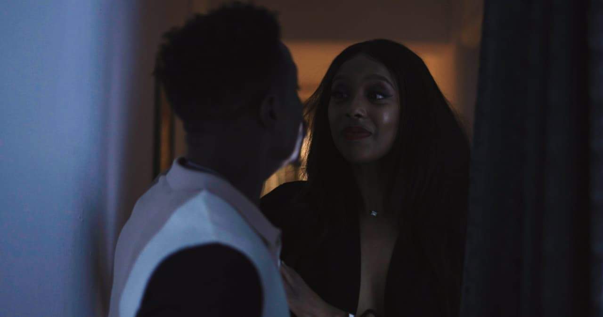
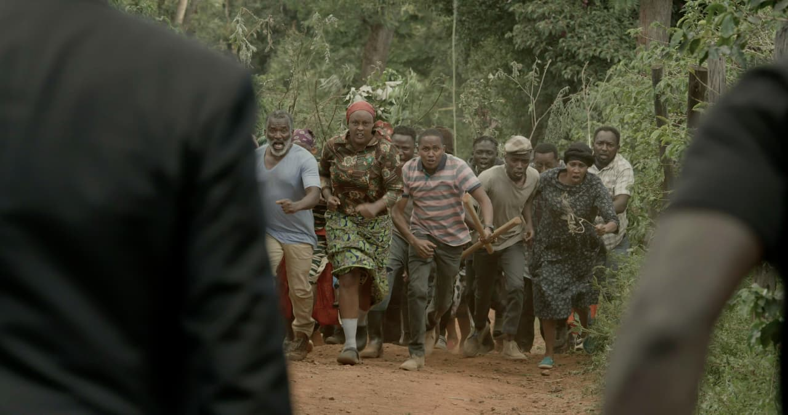
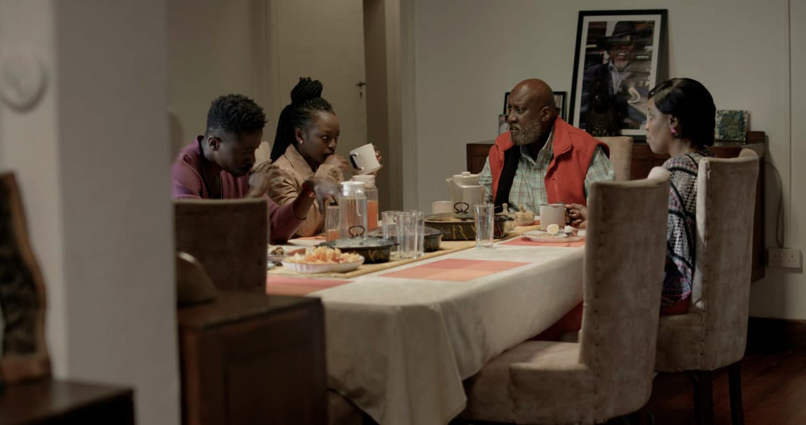
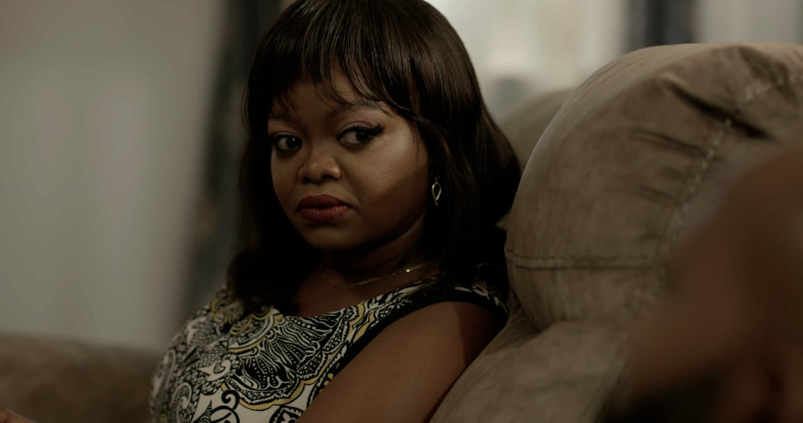
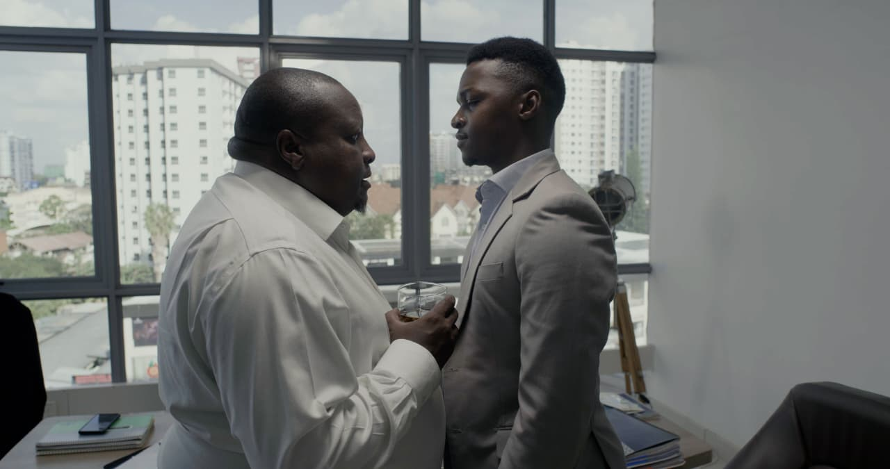
Let's talk
Bring your story to the screen.